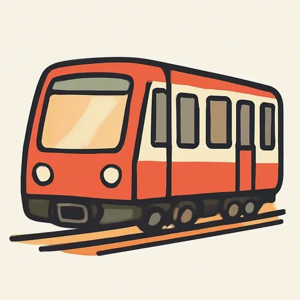
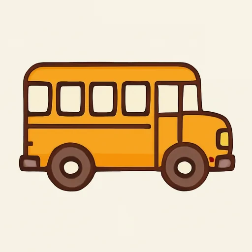
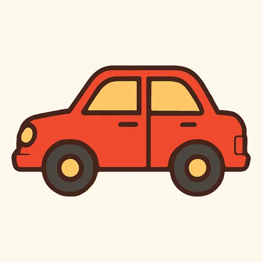
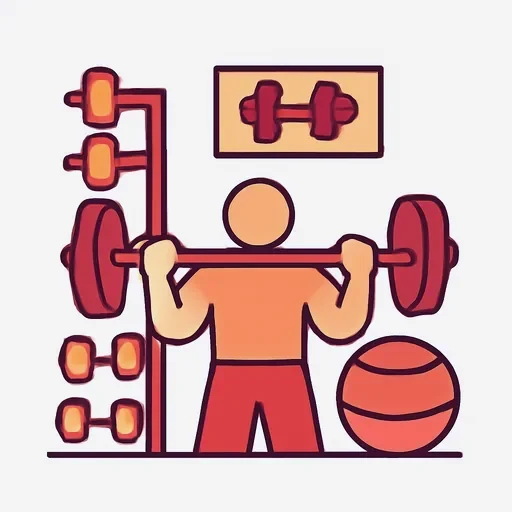

Черновик: урок написан, но преподаватель его ещё не вычитал.
Semana 7 · Día 5 — Ir a: ¿Adónde vas?
Неделя 7 · День 5 — Ir a: куда идёшь?
Сегодня вы научитесь
- спрягать ir — первый полностью неправильный глагол курса;
- говорить, куда вы идёте и как: a pie, en metro, en autobús;
- рассказывать, куда вы ходите по каким дням недели.
1. Разминка (0–3 мин)
- Карточки: 10 слов — места в городе, с артиклем.
- Вопрос: ¿Dónde está la farmacia de tu barrio? Ответьте одной фразой с al или del.
2. Фонетика (3–6 мин)
Интонация восклицания. Испанское восклицание — это одна волна сверху вниз: голос начинается на самой высокой ноте, на слове qué, и круто падает до конца. Русское восклицание держится ровнее и падает только в самом конце, поэтому испанцу звучит скорее вопросом.
И не забывайте перевёрнутый ¡: он ставится там, где восклицание начинается, и предупреждает голос заранее — для этого он и нужен.
Прочитайте вслух, каждое — одним броском вниз:
¡Qué lejos! · ¡Qué cerca! · ¡Qué bien! · ¡Qué grande! · ¡Qué bonito! · ¡Qué tranquilo! · ¡Vamos! · ¡Vamos al parque!
Обратите внимание: в восклицании qué всегда с тильдой, как в вопросе. Безударное que без тильды — это совсем другое слово (союз «что»), и оно никогда не начинает восклицание.
3. Новое (6–16 мин)
Пример
Роса и Николай встречаются на улице в пятницу утром. [AUDIO]
| Español | Русский |
|---|---|
| Nikolái: Rosa, ¿adónde vas ahora? | Роса, ты куда сейчас? |
| Rosa: Voy al banco y después al supermercado. ¿Y tú? | Я в банк, а потом в супермаркет. А ты? |
| Nikolái: Yo voy a la estación: mi hermana llega hoy de Moscú. | Я на вокзал: сегодня приезжает моя сестра. |
| Rosa: ¿Vas en metro? | На метро? |
| Nikolái: No, voy a pie. La estación está cerca. | Нет, пешком. Вокзал близко. |
| Rosa: ¡Qué bien! Yo voy en autobús: el supermercado está lejos. | Как хорошо! А я на автобусе: супермаркет далеко. |
| Nikolái: Los sábados vamos al parque con mis amigos. | По субботам мы с друзьями ходим в парк. |
| Rosa: ¡Perfecto! Los sábados no trabajo. Los lunes y los miércoles voy a clase de español, y los viernes voy al gimnasio. | Хорошо! По субботам я не работаю. По понедельникам и средам хожу на испанский, а по пятницам — в спортзал. |
| Nikolái: ¿Y los domingos? | А по воскресеньям? |
| Rosa: Los domingos estoy en casa. No voy a ningún sitio. | По воскресеньям я дома. Никуда не хожу. |
Объяснение
Сравните. По-русски «идти», «ходить» и «ехать» — три разных глагола, и выбрать один обязательно: «я иду в парк» (сейчас, пешком), «я хожу в парк» (каждую субботу), «я еду в Мадрид» (на транспорте). По-испански на все три случая один глагол — ir. А как именно вы передвигаетесь, если это важно, добавляется отдельно: voy a pie, voy en metro.
Ir — идти, ходить, ехать. Самый неправильный глагол испанского: в формах не остаётся ни одной буквы от инфинитива. Выучить наизусть, как русское «идти — иду — шёл».
| ir | |
|---|---|
| yo | voy |
| tú | vas |
| él / ella / usted | va |
| nosotros / nosotras | vamos |
| vosotros / vosotras | vais |
| ellos / ellas / ustedes | van |
Ir + a + куда. Предлог a обязателен всегда, и вчерашнее слияние работает здесь в полную силу:
| Куда | Español |
|---|---|
| мужской род: a + el → al | voy al banco, al parque, al supermercado, al gimnasio |
| женский род: a la | voy a la farmacia, a la estación, a la plaza |
| город, страна — без артикля | voy a Madrid, a Bogotá, a España |
| «домой», «на занятие» — без артикля | voy a casa, voy a clase |
¿Adónde? — «куда», с тильдой, как все вопросительные слова. Сравните две пары, которые русский склеивает в одну:
| Вопрос | Ответ | Что работает |
|---|---|---|
| ¿Dónde estás? | Estoy en el parque. | где — estar + en |
| ¿Adónde vas? | Voy al parque. | куда — ir + a |
Можно писать и ¿A dónde vas?, в два слова: обе формы правильные.
Как добираетесь: a pie (пешком) — и всё остальное через en: en metro, en autobús, en coche, en tren, en taxi, en bici.
No voy a ningún sitio — «никуда не хожу». Пока запомните это как готовую формулу: двойное отрицание в испанском работает как в русском («никуда не хожу»), но разбирать его будем позже.
По каким дням. Тема «дни недели» целиком будет в пятой единице, а сегодня нужна одна формула: los + день = «по …ам».
| Español | Русский |
|---|---|
| el lunes / los lunes | в понедельник / по понедельникам |
| martes · miércoles · jueves · viernes | вторник · среда · четверг · пятница |
| sábado · domingo | суббота · воскресенье |
Дни пишутся с маленькой буквы (как в русском) и никакого предлога не берут: Los lunes voy al gimnasio. Пять первых во множественном числе не меняются (los lunes, los martes), а sábado и domingo получают -s: los sábados, los domingos.
⚠️ Контраст с русским
- В русском три глагола движения — «идти», «ходить», «ехать» — и выбор между ними обязателен; плюс падеж показывает разницу «куда / где»: «в парк» (винительный) против «в парке» (предложный). Одно и то же «в».
- В испанском один глагол ir на все три русских, но разницу «куда / где» несут разные предлоги и разные глаголы: voy a la plaza (куда) и estoy en la plaza (где). Способ передвижения — отдельная добавка: en + транспорт, и единственное исключение a pie.
- Вы захотите сказать: ✗ Voy en el parque. ✗ Voy en pie. ✗ En lunes voy al gimnasio. → Правильно: ✅ Voy al parque. ✅ Voy a pie. ✅ Los lunes voy al gimnasio. Первая ошибка — из русского «в парке»: en годится для «где», но не для «куда».
Что помогает: ✅ здесь испанский проще русского, а не сложнее: там, где вы обязаны выбрать между «иду» и «хожу», испанец говорит voy и не думает. ✅ И транспорт совпадает с русским «на»: en metro, en autobús, en coche — «на метро, на автобусе, на машине».
4. Практика (16–26 мин)
Упражнение А. Дополните формой глагола ir.
Модель: Yo ___ al banco. → voy
- Rosa ___ a la estación.
- ¿Adónde ___ tú los sábados?
- Nosotros ___ al parque a pie.
- Nikolái y su hermana ___ al supermercado en coche.
- ¿Vosotros ___ a clase de español?
- Yo no ___ al gimnasio los domingos.
- Usted ___ a Madrid en tren, ¿no?
- Mi madre y yo ___ a la farmacia.
- ¿Ustedes ___ a casa en metro?
- Los lunes Rosa ___ al trabajo en autobús.
Упражнение Б. Дополните текст словами из банка. Каждое слово — один раз.
Банк слов: al · a la · a · a pie · en metro · en autobús · adónde · los
La semana de Rosa. ¿___(1) va Rosa cada día? ___(2) lunes y los miércoles va ___(3) clase de español, y va ___(4), porque la escuela está cerca de su casa. Los martes va ___(5) gimnasio ___(6): el gimnasio está lejos y hay una estación al lado. Los jueves va ___(7) farmacia y al supermercado ___(8). Y los domingos no va a ningún sitio: está en casa.
Упражнение В. Переведите на испанский.
- Куда ты идёшь? — Я иду в банк.
- Я еду на вокзал на метро.
- По субботам мы ходим в парк пешком.
- Где ты? — Я в парке.
- Николай едет в Мадрид на поезде.
- По понедельникам я хожу в спортзал.
- Вы (vosotros) идёте домой?
- По воскресеньям Роса не ходит на работу.
5. Выход (26–29 мин)
Скажите, куда вы ходите каждый день недели (7 фраз). По одной фразе на каждый день, от los lunes до los domingos, в этом порядке. В каждой фразе — три вещи: день, форма глагола ir, и место с правильным предлогом (al / a la / a). Там, где знаете, добавьте и способ: a pie, en metro, en autobús, en coche.
Если в какой-то день вы никуда не ходите, так и скажите: Los domingos no voy a ningún sitio: estoy en casa.
Образец: Los lunes voy al trabajo en metro. Los martes voy al gimnasio a pie. Los miércoles voy a clase de español. Los jueves voy al supermercado en coche. Los viernes voy a casa de mi madre. Los sábados voy al parque con mi familia. Los domingos no voy a ningún sitio.
Прочитайте все семь вслух и закончите восклицанием: ¡Qué semana!
6. Итог (29–30 мин)
- [ ] Я спрягаю ir наизусть: voy, vas, va, vamos, vais, van.
- [ ] Я различаю ¿Adónde vas? (ir + a) и ¿Dónde estás? (estar + en).
- [ ] Я говорю a pie, но en metro, en autobús, en coche.
- Добавьте слова дня в колоду. Завтра — повторение недели и мини-тест.
Словарь дня
| Español | Русский | Пример |
|---|---|---|
| ir (voy, vas, va) | идти, ходить, ехать | ¿Adónde vas? — Voy al banco. |
| ¿adónde? | куда | ¿Adónde vas los lunes? |
| a pie | пешком | Voy a pie: está cerca. |
 el metro |
метро | Nikolái va en metro. |
 el autobús |
автобус | Voy al supermercado en autobús. |
 el coche |
машина | Vamos al parque en coche. |
 el gimnasio |
спортзал | Los viernes voy al gimnasio. |
| lunes, martes, miércoles | понедельник, вторник, среда | Los lunes voy a clase. |
| jueves, viernes | четверг, пятница | Los viernes no trabajo. |
| sábado, domingo | суббота, воскресенье | Los domingos estoy en casa. |
Ответы
А. 1. va · 2. vas · 3. vamos · 4. van · 5. vais · 6. voy · 7. va (usted — третье лицо) · 8. vamos («моя мама и я» = nosotros) · 9. van (ustedes) · 10. va.
Б. 1. adónde · 2. Los · 3. a · 4. a pie · 5. al · 6. en metro · 7. a la · 8. en autobús.
Текст целиком: ¿Adónde va Rosa cada día? Los lunes y los miércoles va a clase de español, y va a pie, porque la escuela está cerca de su casa. Los martes va al gimnasio en metro: el gimnasio está lejos y hay una estación al lado. Los jueves va a la farmacia y al supermercado en autobús. Y los domingos no va a ningún sitio: está en casa. — Обратите внимание на 3: a clase, без артикля, как a casa.
В. 1. ¿Adónde vas? — Voy al banco. 2. Voy a la estación en metro. — «на вокзал» = a la: вокзал женского рода (la estación), слияния нет. 3. Los sábados vamos al parque a pie. — русское «ходим» (регулярно) и «идём» (сейчас) — это одно и то же vamos. 4. ¿Dónde estás? — Estoy en el parque. — вот пара к первой фразе: «где» — estar en, «куда» — ir a. 5. Nikolái va a Madrid en tren. — перед названием города артикля нет. 6. Los lunes voy al gimnasio. — никакого предлога перед los lunes: ✗ en lunes. 7. ¿Vais a casa? — a casa, без артикля. 8. Los domingos Rosa no va al trabajo. (или …no trabaja)